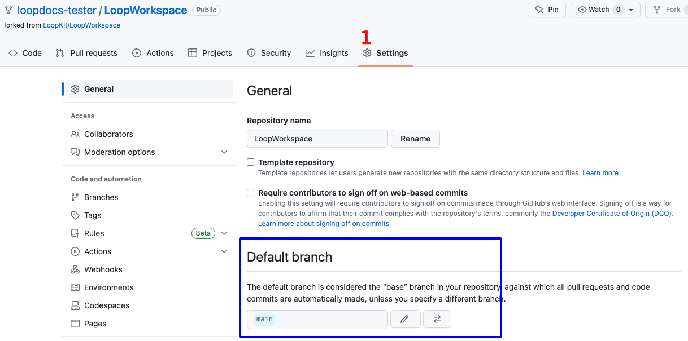

GitHub Update
Update Loop using GitHub Actions¶
This is only available with Loop 3 and Loop development branch.
Time Estimate (click to open/close)
Build Loop
- Start the Build: 5 minutes
- Wait for build to complete and appear in TestFlight on your phone
- about an hour
- depends on GitHub, Apple and TestFlight
Optional: If you need to update your GitHub Personal Access token
- 5 minutes to regenerate token
- 5 minutes to update the GH_PAT Secret for each of your app repositories
Page Summary (click to open/close)
You must build Loop every 90 days when you use the GitHub build method - this is a TestFlight requirement.
Most users will start at GitHub Build Update.
If your GitHub Personal Access Token has expired, we recommend you update it with No Expiration as explained at GitHub Token.
If you are running Loop-dev, be sure to review GitHub Build for dev
- You should be following along with zulipchat when using dev
- Summary build updates can be found under the One-Time Changes section
FAQs (click to open/close)
- Do I need a computer? No.
- Can I do this on my phone? Yes, especially after you update your GitHub token to
No Expiration. - Did the directions change? Yes. We now recommend you select a GitHub Personal Access Token that never expires. It simplifies the build every 90-day process significantly.
- How do I set my
GitHub Personal Accesstoken to never expire? See this section Regenerate GitHub Token. - What happens to my existing builds when I change my GitHub Personal Access Token? Nothing. The
GH_PATonly affect future builds. Previous build will be available for the full 90 days.
GitHub Build Update¶
Summary of Update Steps
Ignore the email that says you need to fix "issues" in your app. You are not selling the app in the app store; so no action is required. The app you built is for personal use for you or a family member.
Accept Agreements¶
Sign in to your Apple Developer account. If there are agreements you have not accepted, you will get errors when you try to Build that indicate your Apple Secrets are incorrect - that is very unlikely.
- For an update, you do not need to modify the
FASTLANE_ISSUER_ID,FASTLANE_KEY_IDorFASTLANE_KEY - Check your Apple Developer account for agreements, then continue
If you need detailed instructions, click on the Apple Program License Agreement help page.
- Accept the
Apple Program License Agreement(only)- You do NOT need to accept anything related to the
Paid Applications Schedule Agreement - That is only required when you sell an app through the
App Store
- You do NOT need to accept anything related to the
Update Fork¶
Open your GitHub account and select your LoopWorkspace repository from your repositories list.
- If your fork is up to date with LoopKit version, you will see the message
This branch is up to date with LoopKit/LoopWorkspace:{branch}- there is no need to build again unless your Loop app in TestFlight is about to expire - in which case, proceed to Build Loop - If your fork shows a message such as
This branch is 3 commits behind LoopKit:mainand you want to update and build, then clickSync Forkby tapping where the red rectangle is shown in the graphic above, then in the pop-up window, tap onUpdate branch - If your fork shows a message such as
This branch is 3 commits behind LoopKit:main and 4 commits ahead of LoopKit:main; you might need to manually sync and choose todiscard changes; you can always customize again after the update
Building a different branch
Do I need to do anything special to build a different branch?
Yes: please follow instructions at GitHub Build for dev
Build Loop¶
Refer to graphic below as you follow the steps to Build Loop.
- Click on the
Actionstab - Select the
4. Build Loopworkflow on the left- If using a mobile browser, be sure to use landscape mode to more closely match how GitHub looks on a computer.
- Look on the right and click
Run workflowto see the dropdown - Click on the green
Run workflowbutton in the dropdown - Wait ~25 min for the build to complete successfully
- It is then processed by Apple and sent to TestFlight (be patient)

What if the Build Fails¶
If a new release is announced at Current Release, look to see if there are instructions about extra steps required with the release. (The release after 3.2.2 will certainly have extra instructions.)
If you are using the dev branch, head over to GitHub Build for dev for information.
Otherwise, head over to GitHub Errors.
Apple Email to Ignore¶
- You can ignore an email from Apple that there are things you must fix in your app - that refers to things to fix before putting that app in the App Store and you will not be doing that
Wait for TestFlight¶
You'll receive an App Store Connect email confirming that the build has completed processing, and a TestFlight email confirming the new app is ready to test.
- If you get an email that the action failed, then return to your repository and look for Build Action error messages
- Click on the most recent Build job with the red x by it
- If the details show this message, "Could not install WWDR certificate"
- This means Apple did not reply to GitHub as fast as GitHub expected
- Make sure your developer account is in good standing and that there are no agreements that need to be accepted
- Repeat the build (previous step)
The updated Loop app will show up in your TestFlight app on the Looper's phone.
- Your new app will have "Expires in 90 days"
- There may be older builds that are still in TestFlight
- It takes time for the update to show up in the TestFlight app
- You will also see a build number in parentheses, that number increments each build - don't worry about the number
Calendar Reminder
This is a good time to put a calendar reminder in your favorite app.
Set it up for a few days before the TestFlight app will expire.
Install or Confirm Installation¶
Automatic Update Disabled¶
Option 1: If you chose to leave TestFlight Automatic Updates disabled for Loop, you choose when to install the app on the phone.
- Open TestFlight on your phone and click
Installas shown in the GIF below - If you are building for a child, follow the Install TestFlight Loop for Child instructions again

Automatic Update Enabled¶
Option 2: If you chose to leave TestFlight Automatic Updates enabled for Loop, the updated build will be installed over your existing app.
- In this case, when you look at the TestFlight app on your phone, the app should have installed automatically
- Refer to the GIF above, the message will say
Openinstead ofInstall
GitHub Build Details¶
In the Loop app, once installed on your phone, tap on Settings -> Support -> Issue Report. The graphic below shows an example of the Build Details included in the report.
- The
profileExpirationlisted here is irrelevant - the app expires when the TestFlight expiration indicates- Pro Tip: Add a calender reminder for your next build
- An app built with GitHub will display a
sourceRootthat starts with/Users/runner/work/LoopWorkspace- The
buildDateStringis when the app was built and transferred to TestFlight, not when it was installed on your phone - You can use 90 days from this date, as well as the Expires in ## Days on the TestFlight app, to know when you need to rebuild
- The

GitHub Token¶
If your GitHub Personal Access Token has not expired and you don't want to regenerate it, you don't need this section.
If you want to follow the new recommendation of using a GitHub Personal Access Token that never expires, you can regenerate the new one at any time.
Update new GH_PAT to Secrets
After you get your new token, immediately add it to your Secrets for any app you build with this method. You don't have to rebuild the app, but it's a good idea to at least run Action 1. Verify Secrets for each repository to make sure you did not make a mistake.
Regenerate GitHub Token¶
You can regenerate your GitHub Personal Access Token at any time by clicking on the link below. (Right-click, control-click to open in a new browser tab.)
If you are not logged in to GitHub and have not logged in recently, then you may see the authentication screen. Click on the link below, and authenticate if requested by clicking on the green Send SMS button or entering your password.

Once you are authenticated, your screen should be similar to the graphic below. The FastLane Access Token is a clickable link.

After you click on FastLane Access Token your screen should be similar to the graphic below.
Your existing TestFlight builds are fine
The yellow GitHub warning by the Regenerate Token button is for new builds you make in the future.
Previous builds are still available in TestFlight and are not affected by this action.
Note - selecting the workflow check box below is new. If yours does not show that selection, add it before you click on Regenerate token (red highlight in graphic below).
Click on Regenerate token (red highlight in previous graphic) to see screen similar to next graphic.
- Most Loopers will have classic personal access tokens
- If you are a developer who needs to use the fine-grained (by repository) option, that's fine
Be sure to change the Expiration from 30 days to No Expiration. When you select No Expiration a GitHub warning appears. Click on the green Regenerate Token button (red highlight in following graphic).

The next screen shows your new token. Copy the token using the copy icon and save it along with your other secret settings.

The next step is to update GH_PAT in your LoopWorkspace Repository Secrets. (If you build other apps with this method - update the GH_PAT for all of them right now - do not forget.)
Update Secrets¶
This example is for updating GH_PAT in the Secrets for your repository, but the same method can be applied when changing any Secret.
This can be done with the GitHub Personal Access Token still in your paste buffer - but to be safe, save the token with your other secret settings. If you lose track, just Regenerate GitHub Token again.
The graphics and instructions in this section are using a phone. This was done just to prove we weren't kidding when we said you can do it all on your phone. Most people use a computer browser.
Scroll all the way up to the top of the window to see the hamburger menu, click on it and choose your name and icon (near bottom of the list). Scroll down to the LoopWorkspace repository and tap on the link.
Do a horizontal scroll (required on your phone, probably not on a browser) on the row that starts with Code and ends in Settings and tap on Settings. If you don't see Settings (if last item on row is Insights), then you are not on your fork or you need to sign in to your GitHub account. You should see username/LoopWorkspace with forked from LoopKit/LoopWorkspace underneath.
Review the GIF below that shows horizontal scroll to find and tap on Settings, then scroll down on the phone to reach "Secrets and variables", open the drop down indicator to see Actions.

After tapping on Settings -> Secrets and Variables -> Actions, keep scrolling on the same screen, past the Action secrets / New repository secret row, until you see your Repository secrets list as shown in the next GIF.

When you see the secret, GH_PAT, tap on the pencil and then scroll down until you see the Actions secrets / Update secret dialog as shown in the next graphic. Paste your new token into the Value section and tap Update Secret.

Scroll all the way to the top of the screen and tap on your LoopWorkspace link. Then follow the GitHub Build Update instructions to start a new build.
GitHub Build for dev¶
You can build any desired branch (available at LoopKit/LoopWorkspace) using the GitHub Browser build method. This section is suitable if you have already built either dev or main branch using the GitHub First-Time instructions.
No matter the method used to build Loop for any branch other than main, you are testing development code. Please read this link now before continuing.
The graphics show the dev branch. If you want a different branch, just substitute that branch name for dev.
Overview of what you will do
- Your LoopWorkspace fork must have the branch you want
- You will either add it or make sure it is up to date
- You cannot just rename your existing branch to dev - you must get the dev branch from LoopKit
- When you select the action
4. Build Loopand then click on theRun Workflowdropdown, you must selectdevthere before clicking the greenRun workflowbutton - see Build Branch
One-Time Changes¶
Look in this section for one-time changes to the dev branch that require special, one-time actions. These are in reverse chronological order to make the most recent one easier to find.
26-July-2023
The bundle ID for the "widget" changed from "SmallStatusWidget" to the more descriptive "LoopWidgetExtension".
The table in LoopDocs (for main) will be updated after the next release.
For those using dev, you must follow these one-time steps:
- Sync your fork to latest version of dev
- Run the Action for Add Identifiers (this adds "
LoopWidgetExtension" to identifiers)- Open the Certificates, Identifiers & Profiles: Identifiers List page.
- Click on the "
LoopWidgetExtension" identifier - Edit the App Group to include
group.com.TEAMID.loopkit.LoopGroupwhere you use yourTEAMID
- Run the Action for Create Certificates
- Run the Action for Build Loop
03-July-2023
- Libre support was added to dev (03 July 2023) using the LibreTransmitter code
- This requires (one-time) that the
Actionsfor2. Add Identifiersand3. Create Certificatesbe run before attempting4. Build Loop - The LibreTransmitter code requires
Near Field Communicationand doing these steps automatically adds the required capability
- This requires (one-time) that the
- Automatic update and automatic monthly build was added to dev (13 July 2023)
- Once a month, GitHub will attempt to update and build Loop from your
default branchusing the instructions in theAction: 4. Build Loop(build_loop.ymlfile) and send the new app to TestFlight - As part of this monthly build, GitHub will check to see if updates are required for your
default branch - When updates are not required, it just builds the app
- When updates are required:
- If it can figure out how to do the
syncautomatically, it does so - If it cannot figure out how to do the
syncautomatically, theActionto4. Build Loopwill fail and you will need to take manual steps
- If it can figure out how to do the
- You will get an email that the
Buildeither succeeded or failed
- Once a month, GitHub will attempt to update and build Loop from your
Automatic Update Requirements
To enable the automatic update and rebuild, two steps are required. These are one-time steps.
- The GH_PAT must be updated (not regenerated) to add
workflow- Examine your
FastLane Access Token - If it says
repo, workflow, then no further action is needed for your GH_PAT - If it say
repoonly, then click on theFastLane Access Tokenlink, click to add a check to theworkflowbox and scroll all the way down to select the greenUpdate tokenbutton
- Examine your
- A new branch called
alivemust be created from the LoopKitdevbranch- Follow the directions at Add Branch, except this time, you will type
alivein the empty branch name that you connect toLoopKit/LoopWorkspacedevbranch - You will not use the
alivefor anything directly, but it must exist for the automatic update to function
- Follow the directions at Add Branch, except this time, you will type
Check Current Branches¶
Your LoopWorkspace fork is at https://github.com/username/LoopWorkspace where you substitute your actual GitHub username. You need to be logged into GitHub. Review the graphic below as you go through the steps.
- Click on the
Branchesicon to display the branches as shown in the lower half of the graphic below:- If the branch you want is not listed, then continue with Step 2
- Otherwise, skip ahead to Update Branch
- Click on the
New branchbutton and follow the Add Branch steps

Add Branch¶
Each step in the list below matches with the number in the graphic. In the top half of the graphic, the left side shows the initial display and the right side shows the display after making the indicated selections:
- Click on the drop down menu labeled 1 in the graphic and choose LoopKit/LoopWorkspace as show in the top right graphic
- Click on the drop down menu labeled 2 in the graphic and choose dev
- Click on the Branch name box labeled 3 in the graphic and type dev
- The branch name in your fork should always match the branch name you are adding; check that you type it correctly
- Review the dialog items to make sure everything is correct and then tap on Create branch

Update Branch¶
Tap the Code button (upper left) and ensure this branch in your fork is up to date.
- Select the desired branch in the dropdown menu (this graphic shows dev branch)
- If the message indicates this branch is "behind", tap on the sync fork button and then the Update branch button
Build Branch¶
If you want a branch to be the one you build all the time, you may choose to Change Default Branch. This is not necessary except for special cases.
If you have one branch as default, for example main, and choose to build a different branch, there is an extra step when you Build Loop. Refer to step 4 in the graphic below. Use the branch dropdown menu to select the branch you want before hitting the green Run workflow button.

Change Default Branch¶
There can be several reasons why you would change your default branch.
- It can be convenient to have the branch you build most be configured as the default branch
- The branch you want to build has a different workflow than your default branch (not typical)
- In this case, you must modify the default branch
- Check the zulipchat conversation about the branch you are testing to see if it is necessary to make it default
These are the steps to modify the default branch.
For this example, we show how to change from a default branch of main to a default branch of dev. Note - only the owner of the repository can take this action and they must be logged in. Otherwise the Settings tab does not appear.
For the numbered steps below, refer to the graphic found under each group of steps.
-
Click on the Settings Icon near the top right of your LoopWorkspace
- You may need to scroll down to see the Default Branch as shown in the graphic - do not tap on the Branches tab to the left under Code and Automation

-
To the right of the default branch name there is a pencil and a left-right arrow icon
- Tap on the left-right arrow icon to bring up the
Switch default branch to another branchdialog
- Tap on the left-right arrow icon to bring up the
- Click on the dropdown next to the current default branch, in this example,
main - Select the desired default branch, in this example,
dev -
Click on the
Updatebutton
-
You will be presented with an are-you-sure question.
- Click on the red
I understand, update the default branch.button

- Click on the red
Your default branch has been changed.